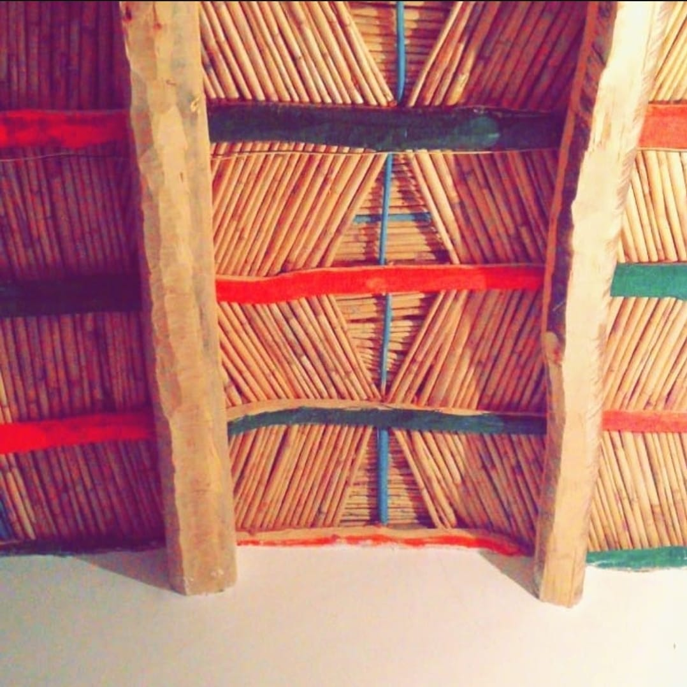
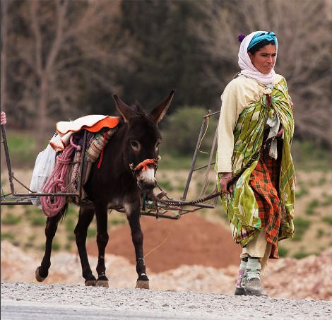

BOUTAGHRAR 💗: Imgoune🗻
Comme with me to descorve my region : enjoy reading
Boutaghrar....The bride of the Valley of the Roses ands his tourist icon in the southeast of the Atlas
I'm so glad present to you my region , to get some inf ormatoin about wondeful small region:
I)The way and locatoin to Boutaghrar
You can click the BOUTAGHRAR to show you the way by google maps, The geographical location 25 kilometers north of the Kalaat Mgouna and at the southeastern
slopes of the High Atlas sits the charming town of Boutaghrar on the banks of the mgoun Valley,which is launched by his young people the nickname "Little France".
Boutaghrar soil belongs to the Eghil Noumgon community created in 1992 in the Boumalne Dades district,
Tinghir province.
Boutaghrar enjoys its strategic location linking several regions. Historically, it was the starting point for commercial
and tourist convoys coming from the desert and heading towards Azilal via Ait Boukamaz ,
passing through Ait Boukmaz in
the north, or Emgran or imghran (is a place on Eghil noumgpon) in the west, through the laurel “Imi Nilghar”
tunnel, which is a mandatory crossing for those wishing to penetrate into these mountains. It is also not far from the oasis of Dades from the eastern side,
only 15 km through an unpaved road called “Teltafraout”, which leads directly to one of the most famous kasbahs in the southeast and even Morocco,
which is the Kasbah of Mohedash (Tigramt Nemuhdash).
Valley Magoun bisects the town of Boutaghrar, half to the right, and consists of “Tamalut” and “Amrdol”, which are two new-born
residential communities, compared to the other half located to the left, which is called “Agmad” or “Ighram akdim” or place old.
II)why the tourest like and love visit boutaghrar?
--------------------And a painting with complete features, in which what is made of nature overlaps with what is human creativity, besides Valley Magoun, without which life would not have existed in this region,so that we may say that “Boutaghrar is a gift of a Magoun, as it is the source of seeds and the cover from the drought. dressed in green, is made of trees of different types and the fields extending along the sides of the roundabouts attached to it's banks.
, the mountains look out from all directions on Boutaghrar, in their red color, as if they are guards guarding a beautiful virgin for fear of rape. And the reeds, which were built by the hands of the components, give the reeds that have been upright and raised the importance for centuries, refusing to kneel, insisting on steadfastness and not giving in to the vicissitudes of time,give
the place a virginal charm free of powder in a surreal scene that is difficult to draw with words, and comes at the forefront of this The majestic Kasbah is the Kasbah of Moh Netmorghdant (Taghramat Notmurgdant), which is one of the most famous
Putgrarian urban landmarks, whose nests are increased by the storks that take their nests from the tops of its towers, and the Berber decoration on its facades is more beautiful than beautiful. Bboutaghrar will receive annually and embrace hundreds
of tourists from different parts of the world to enjoy its calm, beauty of nature, purity of air, and simplicity of its inhabitants. Due to its important location, Boutaghrar has - in addition to what we have mentioned - huge tourist possibilities,
as it is considered the starting point for trips to multiple destinations using different means of transportation from mules, motorcycles, regular cars, four-wheel drive vehicles and “even pedestrians” to whom nature provides tremendous services
and attractive views. , either by turning east towards the Ait Marao Douwers towards the sources of Mkon, through the “Achabou Strait” through Douwer Azouigmet to Ait Boukmaz, or heading west towards the Akouti, Amjcak and Emgrane straits towards
the summit of Mkoun, located about 4,080 meters long, which is one of the favorite tourist destinations for mountain tourism enthusiasts. And lovers of the challenge as one of the highest peaks in Morocco, before completing the walk towards Ait
Boukmaz via Turkdit, Ikkis and Arous. All of the above makes boutaghrar a source of attraction for tourists who love to travel through the mountains to explore the depths of the culture of its people and the habits of its inhabitants who are behind
it, clinging to its slopes as infants swearing that they will not leave their mothers' breasts! Tourists dreaming of climbing to its peak to test their patience and endurance and achieve what only a few have achieved, especially when reaching
points where it is impossible to use a means of transportation other than feet.
Arous Mgoon, then, is the meeting point for the convoys of tourists coming from Bokmez (Azilal) towards kalaat Mgouna, or heading in the opposite direction, as we explained above.
III)The hotels and kasbah of BOUTAGHRAR
- Kasbah Chames
KASBAH CHEMS HAS 17 COMFORTABLE ROOMS AND SUITES.
We know that comfort is very important for everybody. That is why almost every room had his own seating area, air conditioning and separate bathroom with rainshower.
INCREDIBLE VIEWS
The hotel is situated on a hill, so you will have the chance to enjoy breathtaking views during dinner or breakfast.
THE SILENCE OF NATURE
We offer rooms and suites with incredible views. Our place is perfect for people who like to enjoy the silence and beauty of nature.
BIG RANGE OF EXCURSIONS AND ACTIVITIES
Kasbah Chems organize cultural and active activities in and around our beautiful valley. because
BIOLOGICAL DISHES
Our dishes are freshly made with delicious vegetables from our gardens.
- KASBAH AMNAY
A wonderful welcome, fabulous people, very nice as we rarely see, an idyllic setting! A typical inn, clean with themed rooms, oriental decor, tam-tam evenings, a terrace with a breathtaking view and a magnificent garden... Thank you for everything! Treated like a princess ... memories forever engraved ... I recommend it to everyone and hope to return soon ...
I recommend this accommodation.
I liked the view the most, the setting
This property is suitable for Solo travellers, Friends, Couples, Families with children, Families with Teens, Seniors, Business travelers Pension - 7 chambres

- Hotel BOUTAGHRAR
Breakfast included
Free parking
Pets accepted
Restaurant
Restoration
Complimentary continental breakfast daily from 8:00 a.m. to 9:00 a.m.
Restaurant
Services
Reception at limited times
Facilities
Television in the common area
Spoken languages
French
- RIAD BERBER
Located in Bou Tharar, 6 km from Mountain Pass 1955 meters away, Riad Berbère Boutaghrar provides accommodation with a restaurant, free private parking, a shared lounge and a garden. It offers family rooms and a terrace. It offers a 24-hour front desk, room service and currency exchange.
The riad serves an à la carte breakfast.
Guests at Riad Berbère Boutaghrar can enjoy various activities in and around Bou Tharar, such as cycling.
The nearest airport is Ouarzazate Airport, 90 km from the property. An airport shuttle service is available at an additional cost.
- mountain kasbah
The multilingual staff can provide guests with advice and assistance. In the safe, valuables can be deposited practically and safely. In addition, the garden provides a suitable space for relaxation and recreation in the open air. Guests arriving with their own cars can park at the property's indoor garage at no additional charge.
- HOTEL AWAYOU
The multilingual staff can provide guests with advice and assistance. In the safe, valuables can be deposited practically and safely. In addition, the garden provides a suitable space for relaxation and recreation in the open air. Guests arriving with their own cars can park at the property's indoor garage at no additional charge.
It is noticeable that most of these hotels are built in traditional ways and local materials such as mud, tree trunks and reeds, apparently due to their suitability with the region’s very cold climate in winter and mild in summer. Hotels broke up to turn
ceramic pieces like jars and bowls into toilets that furnish their bathrooms, and others hung on the walls, turning hotels into hotels, museums, or permanent exhibitions of heritage at the same time! Sitting on the terrasses of these hotels under
traditional tents or awnings made of palm-leaf gives the visitor to Pottegard a peace of mind and a general view of peace, everything in these areas is spontaneous and free from the boring protocols and formalities of the cities.
III)Difficulties and projects awaiting completion
Despite its huge tourism potential, Boutaghrar, like other tourist sites in the southeast, suffers from many difficulties and problems, perhaps the biggest of which is the marginalization of the media, as the media is a mainstay for the tourism sector,
which is a source of livelihood for many components, through publicity and definition of what the region is rich in. In this context, the actors in the tourism sector in the region record the almost absence of these areas in the national media
In its various colours, in addition to the fragility of the infrastructure, the only road connecting Boutaghrar and Castle Mgouna is narrow and in a catastrophic condition, which poses a danger to its users, especially during encounters or overtaking,
which makes it the scene of fatal accidents, and the situation becomes tragic when it rains, as stones fall And the erosion of the sides of the road represents a danger to commuters through it.
What is the problem of isolation imposed by the atmosphere of the winter season, so it appears as a community, not by diving in the dormitories of a component where it is visible from the fire of the villages at night, but at the level of
the bridge located in the middle of Boutaghrar, where the valley is flooded for hours and perhaps for days, to find thousands of residents themselves isolated from the outside world and with them Some tourists, whose presence here coincides with
a very cold and harsh climate, often spread news of foreigners who were stuck in the area and almost died in it due to the absence of rescue means and rapid intervention techniques, which generates a feeling of grumbling and unwillingness to risk
their lives again, “As for the locals, they are familiar with that suffering.”
IV)histoire,and why called BOUTAGHRAR
What attracts foreign tourists to Potgrarar is the nomadic cave-dwellers in its areas. Visitors aspire to explore the primitive life of these Bedouins, their living conditions and the secrets behind their steadfastness in the face of this
harsh life inside those caves that they will not tolerate staying in for one day, let alone spending their lives in it! The “cave dwellers” are spread specifically in the areas surrounding the road lane linking Boutaghrar and the oasis of Dades
via “Teltafraout”, which the tour guides do not mistake during their tours with their customers coming from all parts of the country. Tigrar is also a natural space for “mechanical adventure” enthusiasts, where “Talouat” zigzags represent the
favorite place for lovers of this type of sports looking for death, according to some of the region’s good people, due to the fact that these zigzags remind the static of great calamities and tragedies when the components were spent before the
pilgrimage The road is towards the fortress of Mgouna, but today, when God has enriched them with its evil, the adventurers with their lives through it can only be “searching for death with a choice, not forced”! Climbing to a height that gives
the visitor a comprehensive panoramic view of the area from the top, as he cannot miss this opportunity without taking a souvenir photo by which one remembers that one day passed from this forgotten magical world among the mountains! In addition
to the natural qualifications, Boutaghrar has great hotels, the most important of which are Hotel Awayou and Hotel Tamalout, located at the entrance to this town
Since it consists of group of 'TEGHRAR' (caves), "BOU" is the plural on tamazight, and thus we get a BOUTAGHRAR means groups of decorated caves
V)traditional and customs of Boutaghrar
AMAZIGH (BERBER) CULTURE IN MOROCCO
Group tizwitte follow the link to watch ahidous or ahwach espesially dance of TAMGHRA (mariage) of boutaghrar
THE title of luxury Moroccan Amazaigh costume
The AMAZIGH (Berber) people refer to themselves by their indigenous name, Amazigh, meaning ‘free people’. As opposed to the name given to them by Romans, with Berber coming from the Latin for Barbarian. No wonder they want to avoid that name. Far from being barbaric, if you have the honour of having an Amazigh guide, tour manager, desert camp host, kasbah owner or waiter during your holiday in Morocco, you will discover that hospitality is at the core of Amazigh culture, and you can’t fail to be struck by it when you travel there.
The Amazigh have been in North Africa as far back as 3000 BCE, and many can trace their lineage back to Yemen and other countries in the Middle East. In Morocco, over 80 percent of people identify as Berber or Amazigh, and the Atlas Mountains range, which dominates the country like a strong spine, is home to the majority. Most also identify as Muslims and, as well as speaking Arabic, they have their own language, known as Tamazight. It is interesting to note that although the majority of the population is Amazigh, their language has only been taught in schools since 2009.
Thank you in Tamazight = Ake issrebeh moulana
Hello in Tamazight = Manzakine or Salam
The Amazaigh people can be divided into three groups: the Riffians, the Chleuh and the Central Moroccan Amazigh and the majority are subsistence farmers managing small holdings with goats and sheep, growing fruits and nuts. They may also be weavers and fabric dyers, with Amazigh carpet making one of many their artisan skills. There are also nomadic communities, although the majority is based in mountain villages now, with traditional adobe houses often built like a compound, enclosing gardens and private outdoor space for artisan work such as weaving. Home is most definitely where the heart is in Amazigh culture, with multi generational families living together in a traditional, patriarchal way.
In the Atlas Mountains, the tradition is for farmers to bring livestock up to summer pastures which is why you will get no better walking guide than the Amazigh. They know these mountains like the back of their hands and they have immense respect for this tricky terrain, especially when it comes to water, a well known local expression being ‘where there is water, there is life’.
Morocco’s Berber people should not be confused with the Tuareg people, famous for their elegant indigo blue robes and headgear to protect them in the desert. Although these are also people of the Sahara, the Tuareg have their own language and live, for the most part, in Saharan Libya, Algeria, Niger, Mali and Burkino Faso.

The Berber or Amazigh people are celebrated for their artistic skills, from pottery to weaving, jewellery to henna art and, in particular, their exquisite designs. For many artists, however, their work is seen as an almost meditative process where they get a chance to incorporate ‘baraka’, into their work. The concept of ‘baraka’ is deeply engrained in Amazigh culture and is best translated as ‘spiritual power’ or ‘power of the saints’. This concept dates from long before their conversion to Islam and it is basically all about keeping bad spirits at bay or staying clear of the ‘evil eye’, by using symbols, motifs and certain colours in their designs.
It is also believed that henna, oleander, sandalwood and myrrh have the same effect, which is why Amazigh women like to do henna designs on their skin. Even their impressive kohl eye makeup is considered a traditional way of gaining self protection through creativity. Traditionally, Berber women would have also had tattoos on their face to mark the rite of passage from adolescence into adulthood, but as tattoos are against Islamic law, henna is often used instead. Some Amazigh women also wear head coverings, called the tahruyt, which are often colourful and embroidered. These scarves are seen as an extension of this self expression through decorative art, now that tattoos are no longer allowed.
There are two museums of interest when it comes to Amazigh culture, both in Marrakech. The first is Tiskiwin Museum, which was founded by a Dutch anthropologist who lived here and who had an incredible collection of cultural artefacts. This is one of Marrakech’s best kept secrets, unlike the second Berber beauty which is in the heart of the Majorelle Gardens also in Marrakech. Get to that one early or late in the day to avoid the coachloads.
THANKS FOR READING :
Hello, I am very pleased
that you read this text and took information about my wonderful town,a thousands welcome again
if you need heelp , or same information , i'm available on :
-----------------------------------------------------------------------------------------------
--------------------------------------------------------------------------------------------------------------------------
if you like my article, don't forget to support me on bank account , if it was possible or easy for you :
Full name: Abdellah Ennajari
my number account BMCE :011556000001200000177069
skills :
HTML
-CSS
-Linux
-C
-javascript
-java
-php
-UML
-fultter
-dart